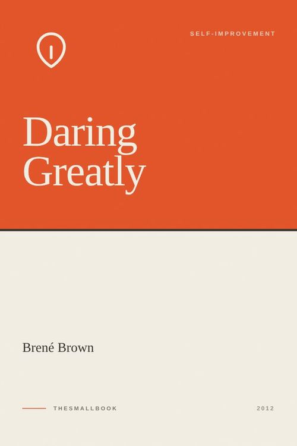
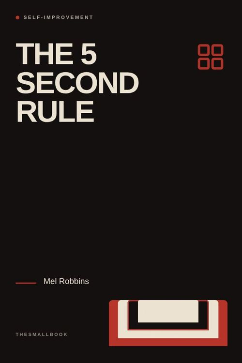

Library › Ask the Library › How do I overcome fear?
How do I overcome fear?
The short answer
Fear shrinks when you name it, plan it, and do it in small doses. Write the worst case, the probability, and your plan B, concrete plans dissolve imagined terrors. Courage is not the absence of fear; it's fear that has been given a schedule.
The books behind the answer

Daring Greatly
Brené Brown · 2012 · 8 min · 6 lessons
Vulnerability isn't weakness - it's the birthplace of courage, connection and everything worth doing.
- Vulnerability Is Not Weakness: Courage is showing up when you can't control the outcome. That's the definition of brave.

The Obstacle Is the Way
Ryan Holiday · 2014 · 8 min · 6 lessons
The impediment to action advances action. What stands in the way becomes the way - through perception, action, and will.
- The Flip: Every Obstacle Inverts: Fear is a compass: it points at exactly the thing you need to do.

The War of Art
Steven Pressfield · 2002 · 8 min · 6 lessons
There's a force whose sole mission is to stop you from doing your work. Naming it - Resistance - is half the war.
- Resistance: The more fear you feel, the more certain you can be the work matters. Fear is the tax on the dream.

The 5 Second Rule
Mel Robbins · 2017 · 8 min · 6 lessons
You'll never feel like it. Count 5-4-3-2-1 and move before your brain kills the impulse - a launch code for the life you keep postponing.
- Everyday Courage: Courage is a rep count, not a personality. Do one scary small thing daily.
Letters from a Stoic
Seneca · 65 · 9 min · 7 lessons
Seneca's letters to his friend Lucilius are a masterclass in the art of living - how to use time, handle wealth, control anger and face death with dignity.
- We Suffer More in Imagination: Most fears never arrive, the rehearsal is the real torture.
A failure that proves it
Why did Julius Caesar fail?
44 BC · EGO · Loss: His life, the Republic's peace
Caesar ignored every warning sign, and got stabbed. Fear is information; use it, don't just feel it.
The warnings you're too important to read are usually the important ones. Every 'that could never happen to me' is data about your blind spot, not the risk.
Questions people ask next
Can I read this in Hindi?
Yes. This answer is written in simple English. Open any linked book and choose Hindi or Hinglish to read the full lessons in your language, with audio where available.